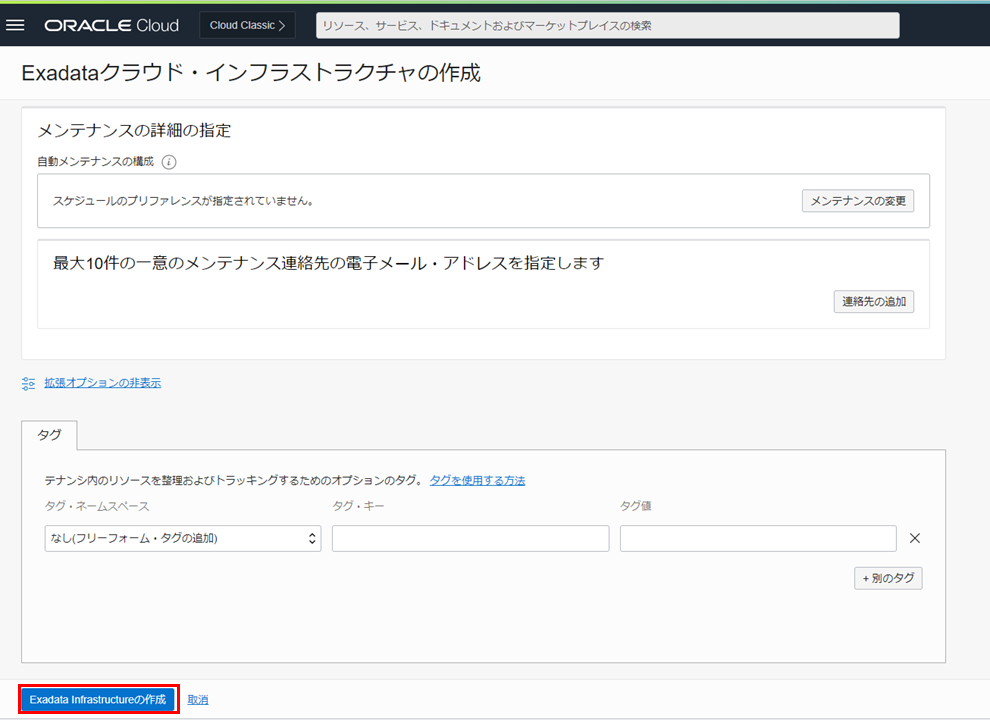
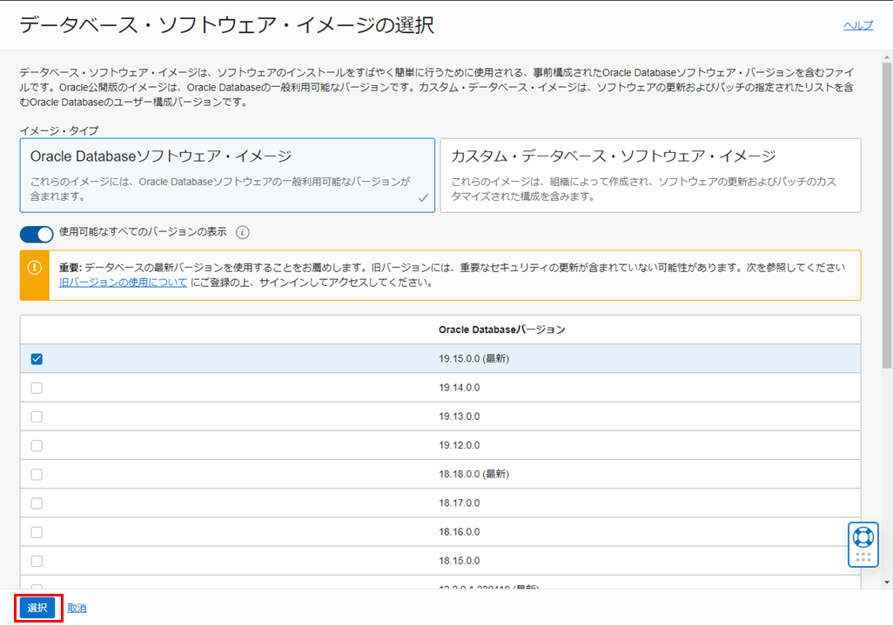
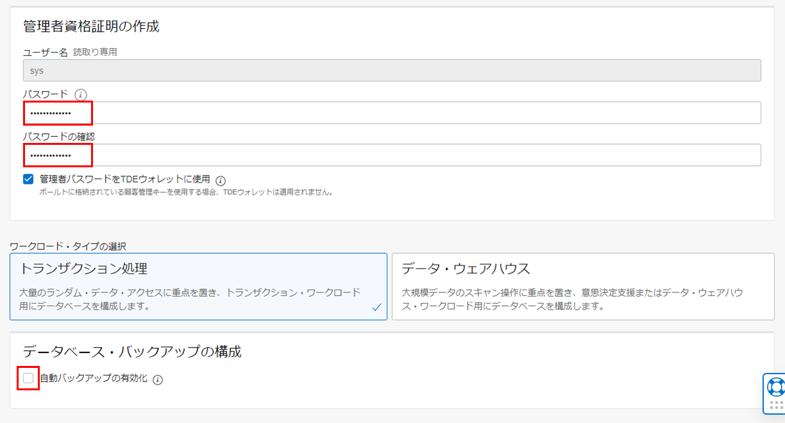

はじめに
Oracle Cloud Infrastructure Exadata Database Service on Dedicated Infrastructure (ExaDB-D) は、Oracle Databaseが高い可用性を備えつつ高いパフォーマンスを発揮できるOracle Exadata Database Machine (Exadata)が利用可能なサービスです。同じようにOCI上でExadataを利用可能なサービスとしては、Autonomous Data WarehouseやAutonomous Transaction Processing などのAutonomous Databaseのサービスがありますが、ExaDB-D が他のサービスと大きく違うところは、全オプションが使える専有型のUser-Managedサービスであるということです。
- 専有型 : H/Wもユーザー専有となり、他のユーザーの環境と分離されるため、セキュリティ・性能を担保できます。
- User-Managed サービス : OS以上は顧客管理。OS上の構築・運用・管理に有効な機能を、クラウドのツールでも提供。パッチ適用やメンテナンスの実施判断・作業タイミングは顧客判。OSログインが可能でこれまで同様の管理方法を用いることができる (OS権限が必要な変更作業、サード・パーティのAgentの導入、ローカルにログやダンプファイルの配置など)ので、別途インスタンスやストレージサービスを立てる必要はありません。
また、オンライン・スケーリング (停止なし)での1時間単位での柔軟な価格体系、デフォルトでの可用性構成や容易に高可用性構成が組めること、PaaSとしてのプロビジョニングや管理面などのメリットがあります。

目次 :
- 1. Exadata Infrastructureの作成
- 2. Exadata VMクラスタの作成
- 3. データベースの作成
- 4. DBシステムへのアクセス
- 5. データベース(PDB)へのアクセス
- 6. PDB上のスキーマへのアクセス
前提条件 :
-
シェイプの確認
ExaDB-Dで利用したいシェイプ名を事前に確認しましょう。ExaDB-Dで利用可能なシェイプについてはOracle Cloud Infrastructure Documentation - Oracle Exadata Database Service on Dedicated Infrastructure Descriptionを参照ください。
-
サービス制限の確認・引き上げのリクエスト
ExaDB-Dを利用するには、まずサービス制限を引き上げる必要があります。サービス制限についてはもしもみなみんがDBをクラウドで動かしてみたら - 第16回 サービス制限についてを参照ください。
-
テナント内の準備
次に、環境作成する前に必要な環境確認やインフラレイヤーでの準備を、下記のチュートリアルをみながら準備しましょう。
ExaDB-D用のVCN内の設定として、前提条件は下記のようなものがあります。
- ExaDB-Dでは、２つのサブネット(クライアント・サブネットとバックアップ・サブネット)が必要なので２つ作成
- クライアント・サブネット内では全てのノード間で、TCPとICMPの疎通が必要なのでセキュリティ・リストを設定
- IPアドレス・スペースの要件
-
Exadata Database Cloudで利用するサブネットは下記と重複しないこと
X8以前： 192.168.*(特に192.168.128.0/20)
X8M以降： 100.64.0.0/10
- クライアント・サブネットで192.168.16.16/28と重複しないこと
- 複数システムを利用する場合、相互のIPアドレスが重複しないこと
- シェイプ(ラック・サイズ)に応じて、必要なアドレス数を用意 (Oracle Cloud Infrastructure Documentation - Network Setup for Exadata Cloud Infrastructure Instancesを参照ください。)

-
所要時間 : 約6時間
1. Exadata Infrastructureの作成
-
OCIコンソール・メニューから Oracle Database → Oracle Public Cloud上のExadata に移動します。

-
画面左の 専用インフラストラクチャ上のOracle Exadata Database Service の下の Exadata Infrastructure をクリックします。

-
Exadata Infrastructureの作成 をクリックします。

-
Exadata Infrastructureの作成 の各項目は以下のように設定します。その他の設定はデフォルトのままにします。
- Exadataインフラストラクチャの基本情報の指定
- コンパートメント - 利用したいコンパートメントを選択します。
- 表示名 - 任意
- 可用性ドメインの選択 - 利用する可用性ドメインを選択します。 (東京や大阪の場合は1つしかありません。)
- Exadataクラウド・インフラストラクチャ・モデルの選択 - 利用するシェイプ (ExadataのRackモデル)を選択します。（本チュートリアルではX9M-2を選択します。）
- コンピュートおよびストレージ構成 (X8M-2およびX9M-2を選択した場合。※Exadataベース、X6-2、X7-2、X8-2を選択した場合は設定が異なります。)
- データベース・サーバー - 使用したいデータベース・サーバーの台数を指定します。 (最低2台)
- ストレージ・サーバー - 使用したいストレージ・サーバーの台数を指定します。 (最低3台)

- システム構成の選択 (X6-2、X7-2、X8-2を選択した場合) - 使用したいシステム構成を選択します。

設定後、Exadata Infrastructureの作成をクリックします。作成まで1分ほどかかります。


- Exadataインフラストラクチャの基本情報の指定
2. Exadata VMクラスタの作成
-
OCIコンソール・メニューから Oracle Database → Oracle Public Cloud上のExadata に移動します。
-
Exadata VMクラスタの作成 をクリックします。

-
Exadata VMクラスタの作成 の各項目は以下のように設定します。その他の設定はデフォルトのままにします。
- コンパートメント - 利用したいコンパートメントを選択します。
- 表示名 - 任意
- クラスタ名 - 任意もしくはなしでも可能
- [コンパートメント名]のExadataインフラストラクチャの選択 - 1. Exadata Infrastructureの作成で作成したExadataインフラストラクチャを選択します。
- VMクラスタの構成
- 仮想マシン当たりのOCPU数を指定 - 仮想マシン当たりで利用したいOCPU数を指定します。 (本ガイドではデフォルトの2を選択します。)

- SSHキーの追加 - ペアの生成、SSHキー・ファイルのアップロード、SSHキーの貼付けのいずれかの選択肢よりSSHキーを追加します。

- ネットワーク設定の構成
- [コンパートメント名]の仮想クラウド・ネットワークの選択 - 前提条件で用意したVCNを指定します。
- [コンパートメント名]のクライアントのサブネットの選択 - 前提条件で用意したクライアント用のサブネットを選択します。
- [コンパートメント名]のバックアップ・サブネットの選択 - 前提条件で用意したバックアップ用のサブネットを選択します。
- ホスト名接頭辞 - 任意

- ライセンス・タイプの選択 - 含まれるライセンス、ライセンス持ち込み(BYOL) のいずれかを選択します。
- 拡張オプション (※こちらの設定はオプションです。)
- 管理
- タイムゾーン - Asia/Tokyo (ブラウザ検出済み)を選択
- 管理

設定後、Exadata VMクラスタの作成 をクリックします。作成まで3~4時間ほどかかります。


3. データベースの作成
-
OCIコンソール・メニューから Oracle Database → Oracle Public Cloud上のExadata に移動します。
-
2. Exadata VMクラスタの作成で作成したExadata VMクラスタの表示名をクリックします。

-
データベースの作成 をクリックします。

-
データベースの作成 の各項目は以下のように設定します。その他の設定はデフォルトのままにします。
- データベースの基本情報
- データベース名 - 任意
- 一意のデータベース名 - 任意もしくはなしでも可能
- データベースのバージョン - 利用したいデータベースのバージョンを選択します。
- PDB名 - 任意もしくはなしでも可能 (なしの場合、デフォルトでPDB1と設定されます。)

- データベース・ホームの指定
- データベース・ホームの表示名 - 任意
- データベース・イメージ - データベース・イメージの変更をクリックします。 データベース・ソフトウェア・イメージの選択画面で、使用したいイメージ・タイプとOracle Databaseバージョン選択します。

設定後、選択をクリックします。

- 管理者資格証明の作成
- パスワード - 任意 (sysスキーマのパスワードです。後から使用しますので、忘れずにメモしておいてください。)
- パスワードの確認 - 任意 (sysスキーマのパスワードです。後から使用しますので、忘れずにメモしておいてください。)
- ワークロード・タイプの選択 - トランザクション処理かデータ・ウェアハウスのいずれかを選択します。
- データベース・バックアップの構成
- 自動バックアップの有効化 からチェックを外します。自動バックアップは作成後に有効化可能です。この章ではチェックを外します。

設定後、データベースの作成 をクリックします。作成まで40分ほどかかります。


- データベースの基本情報
4. DBシステムへのアクセス
-
OCIコンソール・メニューから Oracle Database → Oracle Public Cloud上のExadata に移動します。
-
2. Exadata VMクラスタの作成で作成したExadata VMクラスタの表示名をクリックします。
-
リソースの一覧から仮想マシンをクリックします。

-
接続したいノードのパブリックIPアドレスに表示されているIPアドレスをメモします。

- 任意のターミナルソフトを起動し、以下の情報でssh接続します。
- IPアドレス - 上記ステップで確認したインスタンスの パブリックIPアドレス
- ポート - 22 (デフォルト)
- ユーザー - opc (DBシステムは、接続用に予め opc というユーザーが用意されています)
- SSH鍵 - 2. Exadata VMクラスタの作成の3.で追加した公開鍵と対になる秘密鍵を使用します。
- パスフレーズ - 秘密鍵にパスフレーズが設定されている場合は指定してください。 下記は Tera Term を利用した場合の接続の設定例です。


接続が成功すると以下のように表示されます。

-
oracleユーザーにログインします。
実行コマンド
sudo su - oracle実行例
[opc@exa1-tmhmo1 ~]$ sudo su - oracle Last login: Fri Jul 8 17:30:15 JST 2022 [oracle@exa1-tmhmo1 ~]$ログアウトせず、そのまま次に進んでください。
5. データベース(PDB)へのアクセス
-
環境変数設定ファイルの読み込み
oracleユーザーのホーム・ディレクトリ(/home/oracle)に環境変数設定ファイルが自動で生成されていて、そのファイルの中身を読み込むことで簡単に環境変数が設定され、データベースの接続が簡素化されます。
以下のように環境変数設定ファイルを確認し、読み込みます。また、環境変数の設定が反映されたか確認します。
実行コマンド
ls . <データベース名> .env env | grep ORACLE実行例
[oracle@exa1-tmhmo1 ~]$ ls DB.env [oracle@exa1-tmhmo1 ~]$ . DB.env [oracle@exa1-tmhmo1 ~]$ env | grep ORACLE ORACLE_UNQNAME=DB_bkc_kix ORACLE_SID=DB1 ORACLE_BASE=/u02/app/oracle ORACLE_HOSTNAME=exa1-tmhmo1.sub07160524340.testvcn.oraclevcn.com ORACLE_HOME=/u02/app/oracle/product/19.0.0.0/dbhome_1 -
データベース(CDB)に接続する
以下のコマンドを用いて3. データベースの作成で作成したデータベースのコンテナ・データベース (CDB)に対してsysユーザでSQL*Plusから接続します。
実行コマンド
sqlplus / as sysdba実行例
[oracle@exa1-tmhmo1 ~]$ sqlplus / as sysdba SQL*Plus: Release 19.0.0.0.0 - Production on Mon Jul 4 22:15:37 2022 Version 19.15.0.0.0 Copyright (c) 1982, 2022, Oracle. All rights reserved. Connected to: Oracle Database 19c EE Extreme Perf Release 19.0.0.0.0 - Production Version 19.15.0.0.0 SQL>接続しているデータベースのデータベース名とコンテナ名を確認します。
実行コマンド
show parameter db_name show con_name実行例
SQL> show parameter db_name NAME TYPE VALUE ------------------------------------ ----------- ------------------------------ db_name string DB SQL> show con_name CON_NAME ------------------------------ CDB$ROOT -
PDBに接続する
デフォルトで作成されているPDBを確認し、PDBインスタンスに接続します。
実行コマンド
show pdbs alter session set container = PDB ;実行例
SQL> show pdbs CON_ID CON_NAME OPEN MODE RESTRICTED ---------- ------------------------------ ---------- ---------- 2 PDB$SEED READ ONLY NO 3 PDB READ WRITE NO SQL> alter session set container = PDB ; Session altered. SQL> -
PDB上にスキーマを作成します。
尚、ここでは便宜上、最低限必要な権限を付与していますが、要件に応じて権限・ロールを付与するようにしてください。
実行コマンド
create user TESTUSER identified by <任意のパスワード> ; grant CREATE SESSION, CONNECT,RESOURCE,UNLIMITED TABLESPACE to TESTUSER ; exit実行例
SQL> create user TESTUSER identified by Welcome1 ; User created. SQL> grant CREATE SESSION, CONNECT,RESOURCE,UNLIMITED TABLESPACE to TESTUSER ; Grant succeeded. SQL> exit Disconnected from Oracle Database 19c EE Extreme Perf Release 19.0.0.0.0 - Production Version 19.15.0.0.0 [oracle@exa1-tmhmo1 ~]$
6. PDB上のスキーマへのアクセス
-
OCIコンソール・メニューから Oracle Database → Oracle Public Cloud上のExadata に移動します。
-
2. Exadata VMクラスタの作成で作成したExadata VMクラスタの表示名をクリックします。
-
データベースの一覧から3. データベースの作成で作成したデータベースの名前をクリックします。

-
リソースの一覧からプラガブル・データベースをクリックします。

-
プラガブル・データベースの一覧から接続したいPDBの名前をクリックします。

-
PDB接続をクリックします。

-
簡易接続の接続文字列の右にあるコピーをクリックし、メモします。

-
ダイアログを閉じます。

-
DBシステムへアクセスしてoracleユーザとしてログインします。(4. DBシステムへのアクセスを参照ください。)
-
環境変数設定ファイルを読み込みます。(5. データベース(PDB)へのアクセスの1.を参照ください。)
-
PDB上のスキーマに接続します。
実行コマンド
sqlplus <スキーマ名>/<パスワード>@<8.でメモした接続文字列>実行例
[oracle@exa1-tmhmo1 ~]$ sqlplus testuser/Welcome1@exa1-tmhmo-scan.sub07160524340.testvcn.oraclevcn.com:1521/DB_PDB.paas.oracle.com SQL*Plus: Release 19.0.0.0.0 - Production on Tue Jul 5 10:00:30 2022 Version 19.15.0.0.0 Copyright (c) 1982, 2022, Oracle. All rights reserved. Connected to: Oracle Database 19c EE Extreme Perf Release 19.0.0.0.0 - Production Version 19.15.0.0.0 SQL> -
接続情報を確認します。
実行コマンド
show con_name show user実行例
SQL> show con_name CON_NAME ------------------------------ PDB SQL> show user USER is "TESTUSER"
以上で この章の作業は完了です。
参考資料
- Oracle Cloud Infrastructure Documentation - Oracle Exadata Database Service on Dedicated Infrastructure
- Oracle Cloud Infrastructure Exadata Database Service on Dedicated Infrastructure (ExaDB-D) サービス詳細